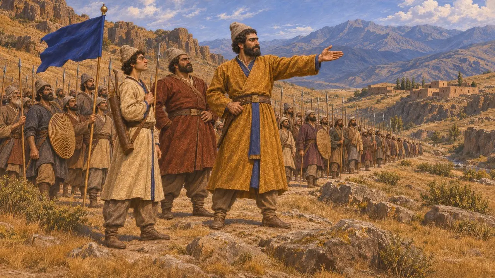
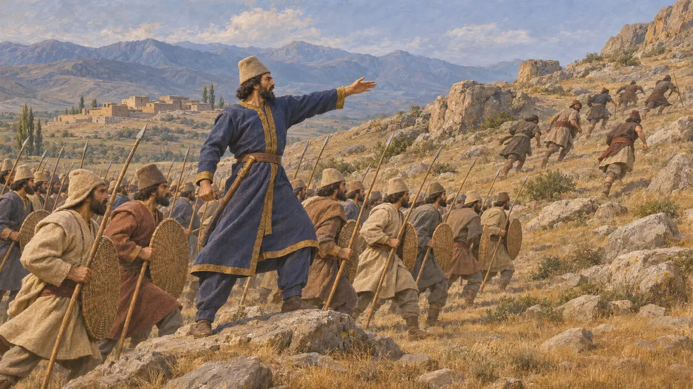
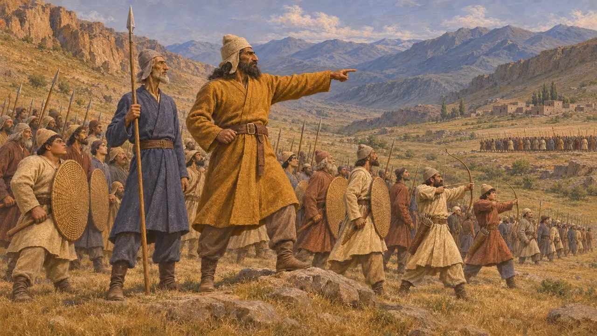
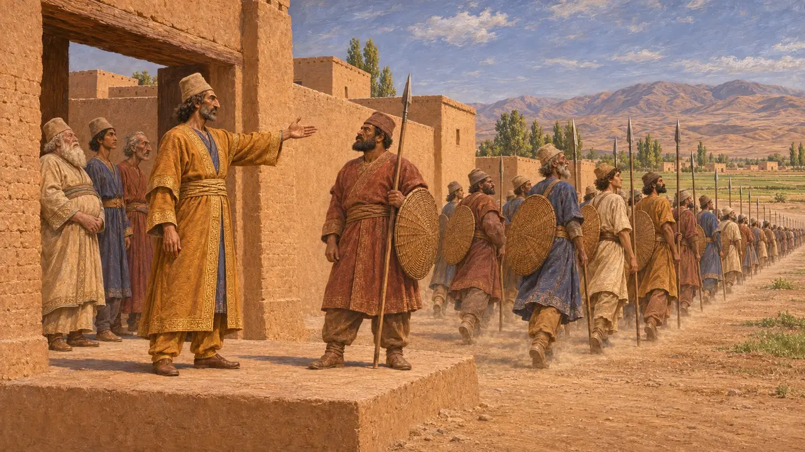
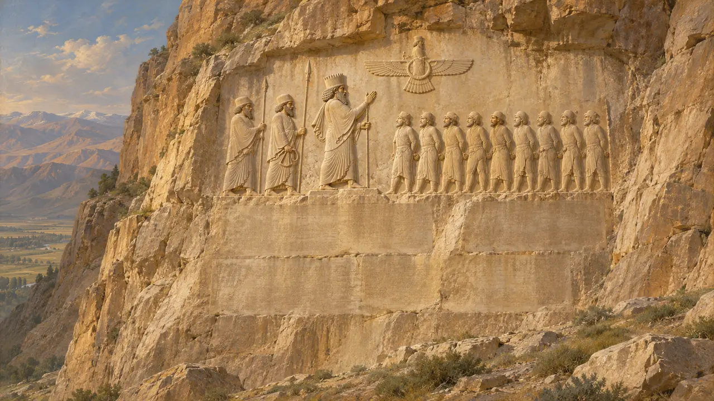

Dadarshish
Servitore e generale di Dario nella guerra d'Armenia, 521 a.C.
Dadarshish era un generale che Dario inviò contro i ribelli armeni nelle rivolte seguite all'uccisione di Gaumata. È noto dall'iscrizione di Behistun, dove Dario lo nomina come suo servitore ed elenca tre battaglie da lui vinte. Un uomo con lo stesso nome compare più avanti nel testo come satrapo di Battriana, e gli storici discutono se si tratti della stessa persona.
Nel gioco: Il gioco lo nomina solo negli articoli degli eventi, soprattutto sulla guerra in Armenia, e non gli attribuisce alcuna meccanica propria. La sua descrizione come il generale delle cinque battaglie si discosta da Behistun, che gliene attribuisce tre e due a Vaumisa.


Tre battaglie
Nelle fontiDario elenca tre battaglie combattute da Dadarshish contro i ribelli, a Zuzahya, a Tigra e a Uyama, ciascuna con una data secondo il calendario antico persiano. In ognuna Dario attribuisce la vittoria all'aiuto di Ahuramazda. Il resoconto è quello del Re stesso, scritto dopo gli eventi.
DB §§26-28

Vaumisa e il resto della guerra
Nelle fontiDario inviò contro gli stessi ribelli anche un servitore persiano, Vaumisa. L'iscrizione attribuisce a Vaumisa due battaglie, perciò la guerra ebbe due comandanti sul campo, e le cinque battaglie appartengono ai due uomini insieme.
DB §§28-29

Satrapo di Battriana
ContesoPiù avanti l'iscrizione nomina un Dadarshish, definito persiano e servitore del Re, come satrapo in Battriana, che inviò un esercito contro i ribelli in Margiana. Alcuni storici lo identificano con il generale della guerra armena, mentre altri ritengono che due uomini portassero lo stesso nome. Le diverse designazioni, armeno in un luogo e persiano nell'altro, alimentano il dubbio.
DB §38

Perché è noto
Nelle fontiDadarshish è noto soltanto dall'iscrizione reale, composta per lodare Dario. Non si conosce alcuno scrittore greco che lo nomini. La sua visione degli eventi è dunque andata perduta.
DB §§26-28, 38
Fonti
- DB §§26-29, 38
- R. Schmitt, The Bisitun Inscriptions of Darius the Great, Old Persian Text, 1991
- P. Briant, From Cyrus to Alexander, 2002